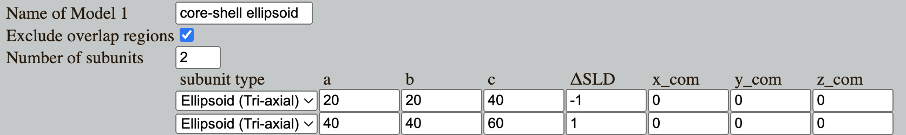

Home
Tutorial: Core-shell
Contributors: Andreas Haahr Larsen (Univ Cph)

Spherical core-shell particle. The scattering length density ($SLD$) of the core is different from the shell, and both are different from the solvent $SLD$. Many particles can be modelled as core-shell particles, including coated nanoparticles or self-assembled structures like surfactant micelles or diblock copolymer micelles.
Before you start
- Download and install SasView (on MacOS: you need to install Xcode first).
- We recommended that you complete the Spheres tutorial if you are not familiar with basic fitting in SasView.
- We assume basic understanding of scattering length density and contrast in small-angle scattering
Learning outcomes
Be able to estimate the size of core-shell particles by fitting of SAXS or SANS data. To do this you should:- Be able to fit SAXS or SANS data from multicontrast core-shell particles in SasView.
- Understand how to avoid parameter correlation
- Be able to assess if the fitted model parameters are resonable.
Part I: Simulate data from spherical core-shell particles
Go to Shape2SAS, and simulate a spherical core-shell particle with inner radius of 30 Å and core $\Delta\mathrm{SLD}=-1$, and outer radius of 50 Å and shell $\Delta\mathrm{SLD}=1$. This can be done by combining two spheres as Model 1 Note on order of subunites in Shape2SAS
Overlapping points from different subunits are removed (by default).
The points from the subunits that are lowest in the list are removed, whereas points from subunits higher in the list remain.
So in the case of a cores-shell particle, the smaller sphere should be above the larger in the subunit list, so the overlapping points are excluded from the larger sphere.
Try to vary the size and contrasts of the core and shell (you can simulate several models and compare them in Shape2SAS by clicking the boxes Calculate scattering for Model 2/3/4).
Part II: Fit simulated data
Download your simulated data for the spherical core-shell particle (or you can use this data), and load it into SasView and fit a core-shell sphere form factor.Assess if it is good fit, and if any parameters are correlated - see the fitting tips and tricks
Part III: Simulate and fit ellipsoidal core-shell particle
Many core-shell particles are not perfectly round. This is often the case for micelles. Therefore, you may use core-shell ellipsoids as model instead.In Shape2SAS, simulate an elliptical core-shell particle (or you can use this data).
For an ellipsoid in Shape2SAS, parameters a, b and c are the semi-axes (radii). Set a anb b to the same number, and c to a larger value. Smaller numbers should be used for the core, e.g.:

Now, fit these data in SasView using the core_shell_ellipsoid model. You can find this model under the Ellipsoid category. (Fitting tips and tricks).
Challenges
- Challenge 1: PEGylated spherical metallic nanoparticle were measured with small-angle scattering. The PEGylation is expected to form a shell around the nanoparticle. The sample was measured with two different contrasts: in SAXS where the core contrast is much larger than the PEG contrast (SAXS data), and with SANS where the contrasts are more comparable (SANS data). What is the structure of the particle (inner and outer radii). (Hint)
- Challenge 2: You have measured a sample of self-assembled emulsifier molecules, and you expect them to form micelles (download SAXS data). You have calculated core $\Delta\mathrm{SLD}$ to be around -3 (arbitrary units) and the shell $\Delta\mathrm{SLD}$ to be approximately 6. Do they form micelles, and what size? Obs: this data has units 1/nm for $q$ instead of 1/Å - to fit parameters will also have these units.
Feedback
Help us improve the tutorials by- Reporting issues and bugs via our GitHub page. This could be typos, dead links etc., but also insufficient information or unclear instructions.
- Suggesting new tutorials/additions/improvements in the SAStutorials forum.
- Posting or answering questions in the SAStutorials forum.